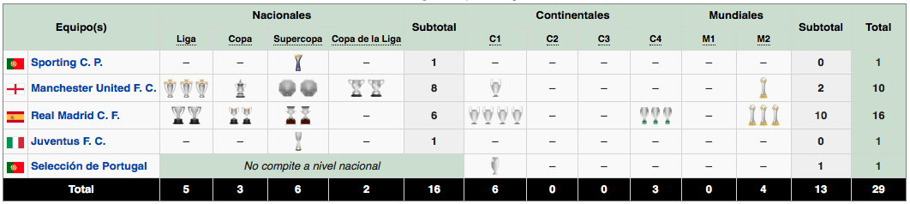
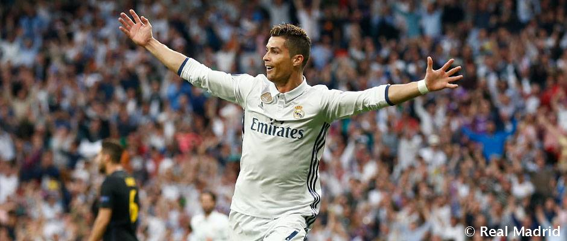

CRISTIANO RONALDO
- Inicio
- Biografia
- Titulos
- Mejores Goles

Aqui podremos ver todos los titulos que ha ganado Cristiano durante sus partidos con clubes.
Entre sus logros, destacan algunos por su alto registro goleador como profesional. En el año 2013, el jugador anotó 69 goles en un año natural, siendo la mejor marca del citado período a nivel mundial y la suya propia. Logrados con el Real Madrid C. F. (59 goles) y con la selección de fútbol de Portugal (10 goles), contribuyeron a que se alzase con el Balón de Oro de la FIFA, el segundo en su carrera.231232 El registro contabilizó siete hat-tricks y quince dobletes. A la temporada siguiente, la correspondiente al curso 2014-15, anotó 61 goles en 54 partidos, con un promedio de 1.13 goles por encuentro,n 12 para convirtirse en el madridista con más goles en una temporada en toda la historia del club y ser la temporada con más goles en toda su carrera profesional. 233 Seis dobletes, seis hat-tricks, un póquer y un repóquer sobresalieron entre los goles.

Divididos por competición fue en la máxima competición de clubes de Europa, la Liga de Campeones, donde firmó algunos de sus más importantes logros. En la citada temporada 2013-14 alcanzó el récord absoluto de goles en una misma edición en toda la historia del torneo con 17 goles en 11 partidos, arrojando un promedio goleador de 1.55 por encuentro. Era también la cifra más alta conseguida por ningún jugador en una competición europea igualando el registro de Radamel Falcao de 2011 logrado en Liga Europa. Consiguió anotar al menos un gol en cada una de las fases del torneo.234 Dichos números le llevaron junto al resto de temporadas y competiciones UEFA a una cifra en su carrera de 108 goles, la más alta lograda por un futbolista. De ellos, 106 de ellos pertenecían a la Liga de Campeones y 2 a la Supercopa de Europa, mientras que el club y el estadio en donde más goles anotó fueron el ya citado Real Madrid C. F. (90 goles) y el Estadio Santiago Bernabéu (47 goles).Su "víctima" preferida fue el Club Bayern, al que anotó 9 goles.
En España, estableció un nuevo récord absoluto de goles en el arranque de la Liga 2014-15, al anotar quince en ocho jornadas, siendo la cifra más alta conseguida por ningún jugador en la competición española y superando el anterior registro, logrado por Esteban Echevarría en la temporada 1943-44 de catorce goles en ocho jornadas.237 El récord continuó incrementándose cuatro jornadas más, anotando un total de veinte goles en doce jornadas, superando el registro de Isidro Lángara de la temporada 1935-36 con dieciséis goles en diez jornadas. El récord fue conseguido tras anotar al menos un gol en cada uno de los once partidos disputados (se perdió un partido por lesión), estableciendo también un nuevo registro en el club de partidos consecutivos marcando en Liga, para un total de veinte goles y superando el anterior registro de trece goles en siete partidos que obstentaba Ferenc Puskás en 1959-60 y 1960-61.
En la temporada 2014-15, estableció un nuevo récord personal al conseguir anotar veinte goles durante doce partidos consecutivos en todas las competiciones en juego. La racha se detuvo en la cuarta jornada de la Liga de Campeones, en donde no consiguió anotar en la visita del Liverpool Football Club a Madrid.
Con tres títulos, Cristiano Ronaldo es el jugador que más veces ha ganado el Premio UEFA al Mejor Jugador en Europa
El 15 de junio de 2018 se convirtió en el cuarto jugador en la historia de la Copa Mundial en marcar goles en cuatro ediciones diferentes del torneo, junto a Pelé, Uwe Seeler y Miroslav Klose.